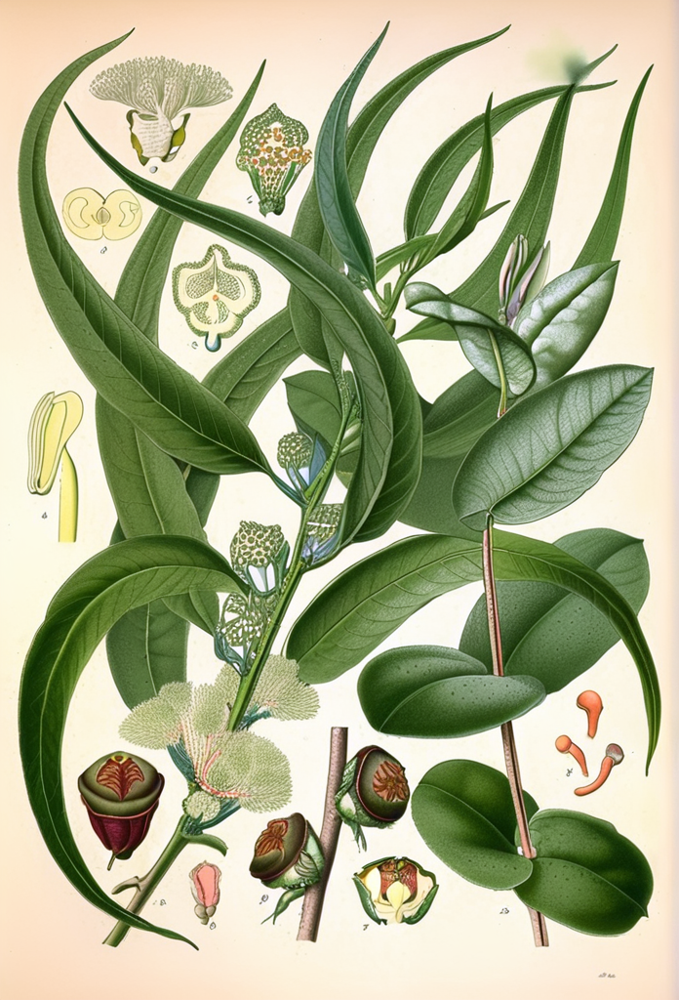
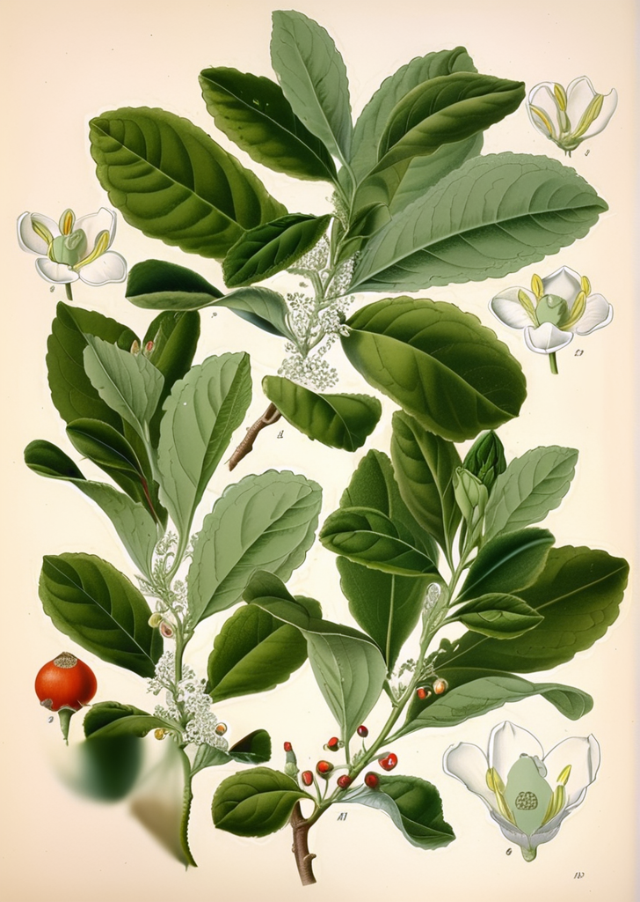
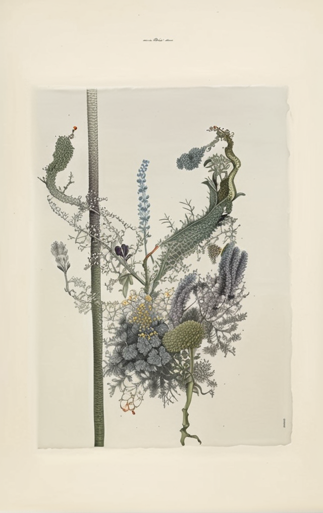
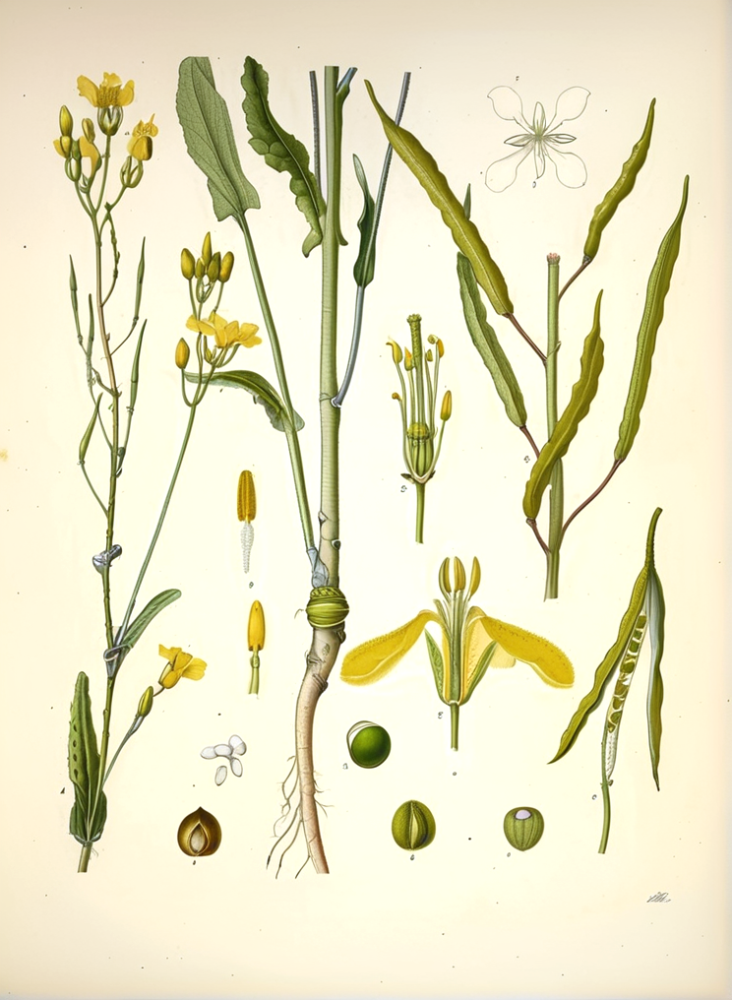
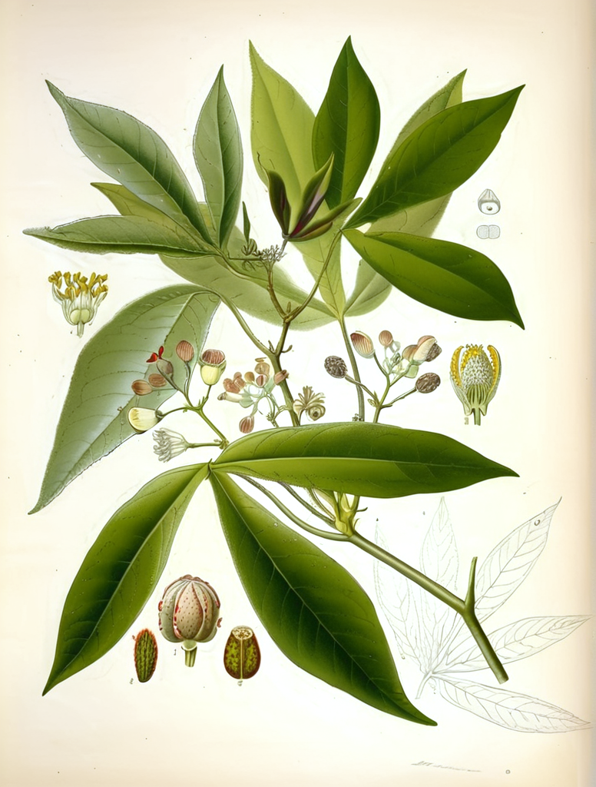
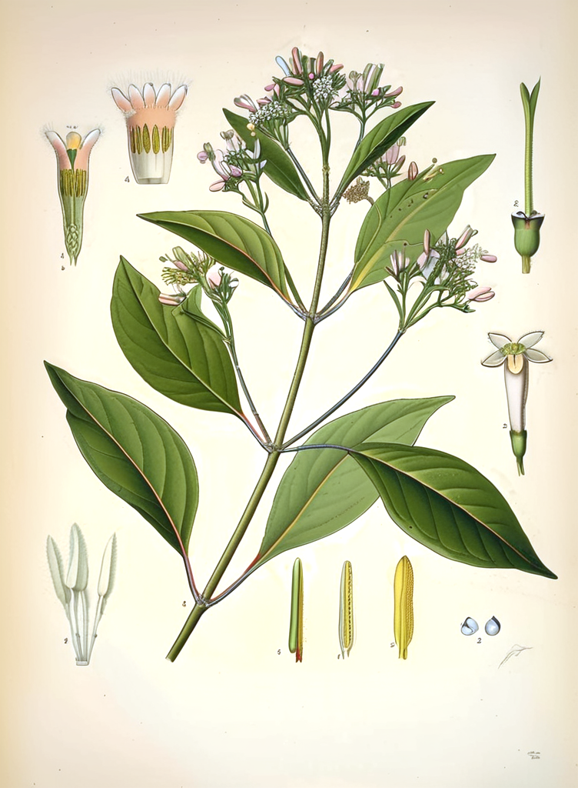
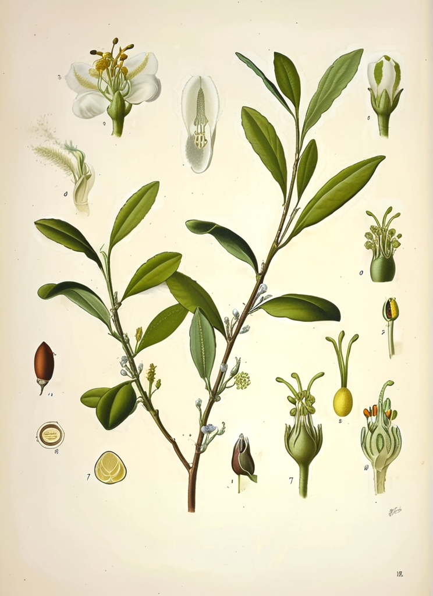
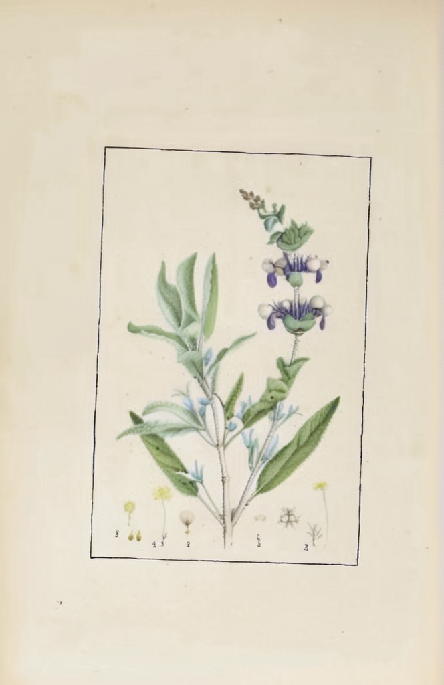

Conoce las Plantas de los Andes y la Amazonía
Yerbateca reúne monografías ilustradas de plantas medicinales tradicionales de América Latina. Cada entrada incluye láminas botánicas históricas, clasificación científica, compuestos activos, usos tradicionales documentados y referencias a la evidencia científica actual.
Plantas Destacadas

Camu Camu
Myrciaria dubia
Myrtaceae

Graviola
Annona muricata
Annonaceae

Hercampuri
Gentianella alborosea
Gentianaceae

Yerba Mate
Ilex paraguariensis
Aquifoliaceae

Maca
Lepidium meyenii
Brassicaceae

Moringa
Moringa oleifera
Moringaceae

Aguaymanto
Physalis peruviana
Solanaceae

Quinoa
Chenopodium quinoa
Amaranthaceae

Sacha Inchi
Plukenetia volubilis
Euphorbiaceae

Boldo
Peumus boldus
Monimiaceae

Cascarilla
Cinchona officinalis
Rubiaceae

Coca
Erythroxylum coca
Erythroxylaceae

Uña de Gato
Uncaria tomentosa
Rubiaceae